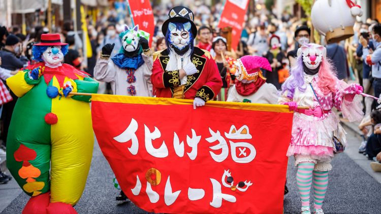

Berita Hari Ini
7 Acara Seru yang Bisa Kamu Ikuti di Tokyo Bulan Ini!
Japan Travel
Oleh: Anindita Rahardini | Tanggal: 7 Oktober 2024
Honolu Grande Kyoto, Surganya Kuliner Jepang Halal untuk Wisatawan Muslim
Halal in Japan
Oleh: Anindita Rahardini | Tanggal: 7 Oktober 2024
Hideaki Anno Umumkan Anime Space Battleship Yamato yang Baru
Anime Manga
Oleh: Frederiz | Tanggal: 7 Oktober 2024